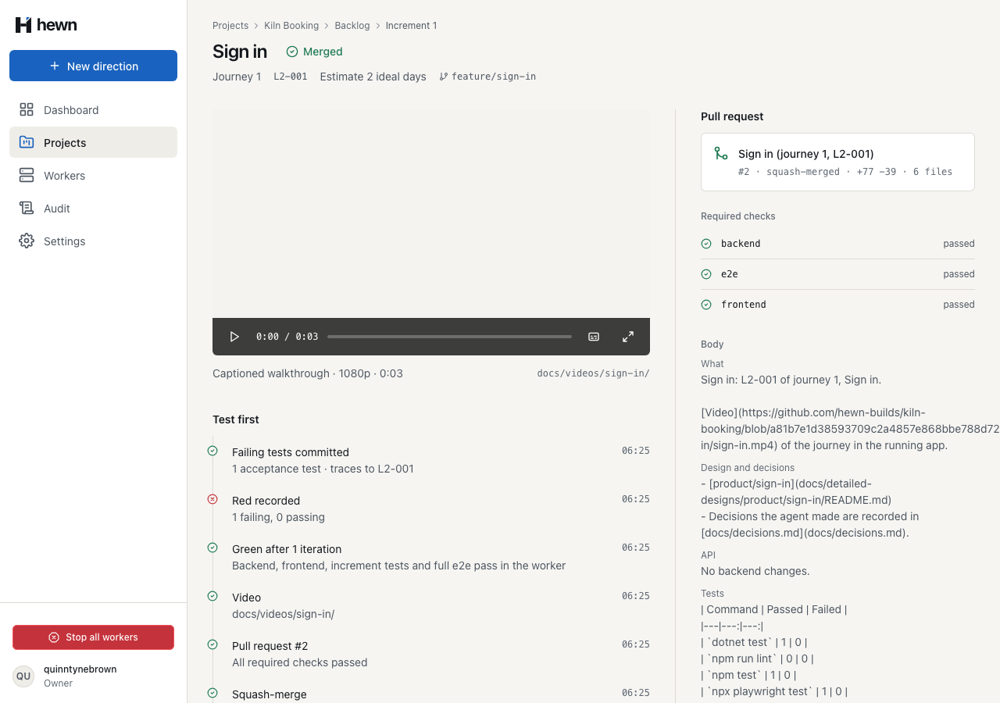
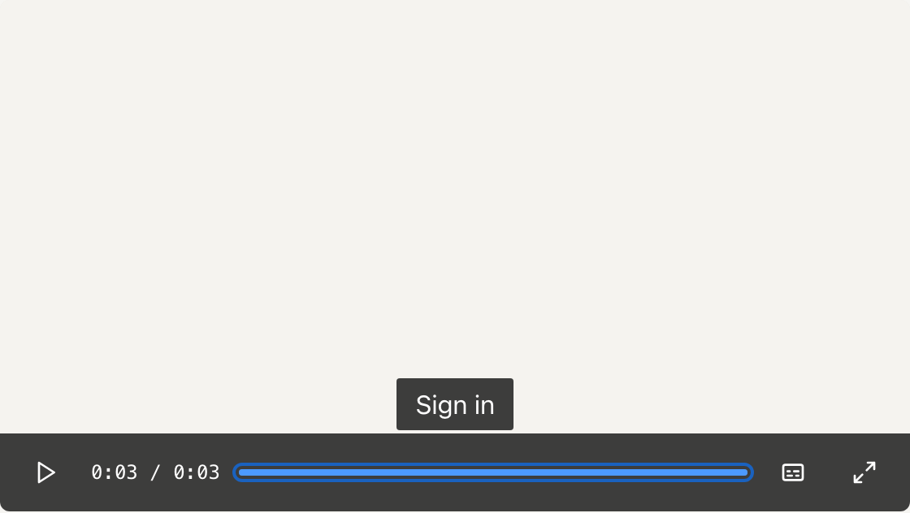
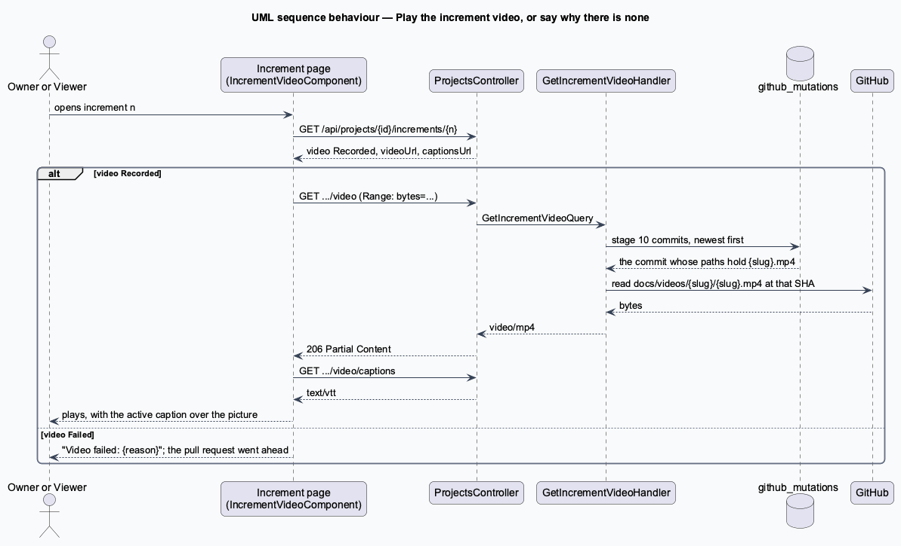
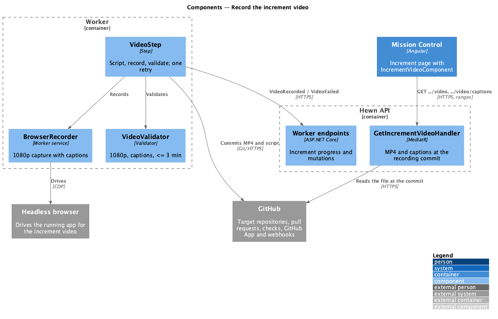
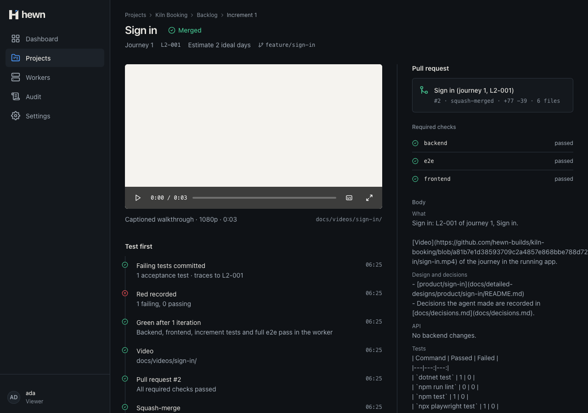
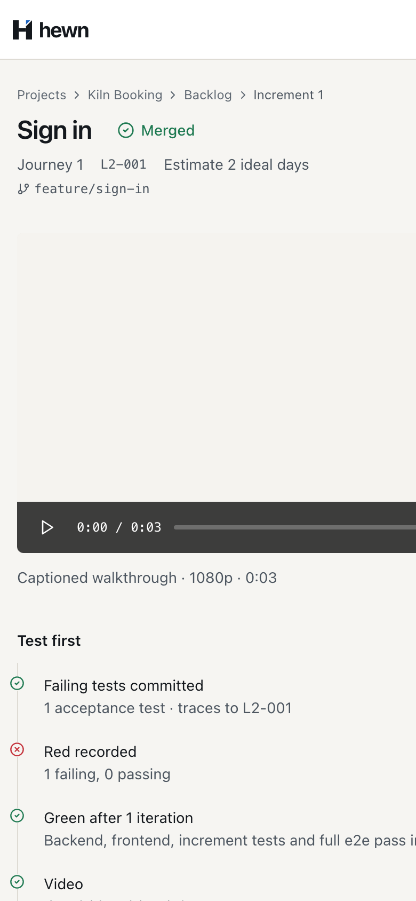
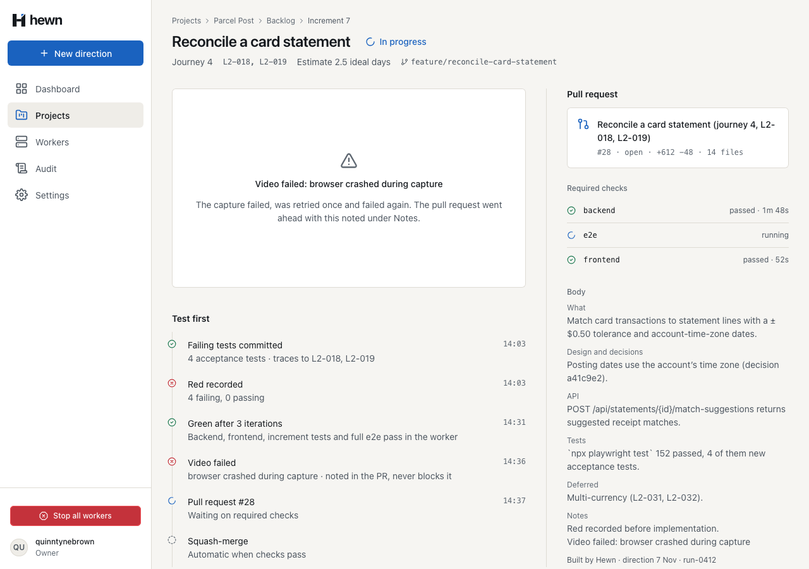
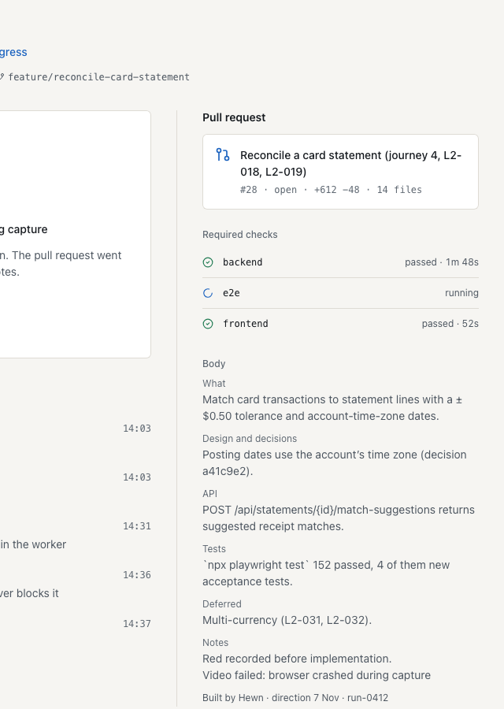
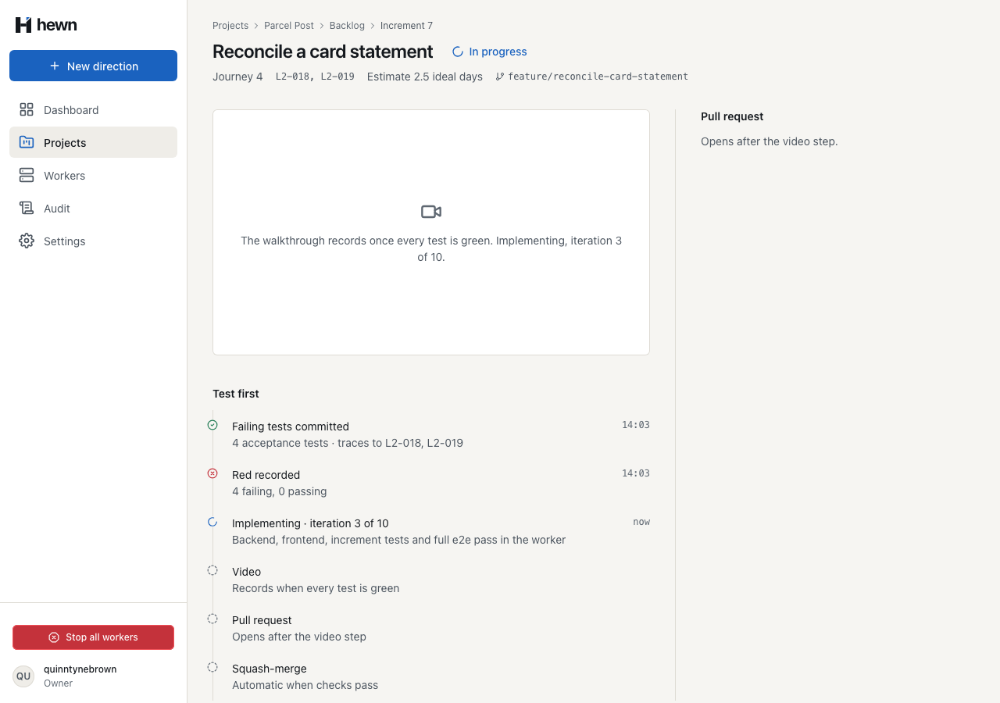
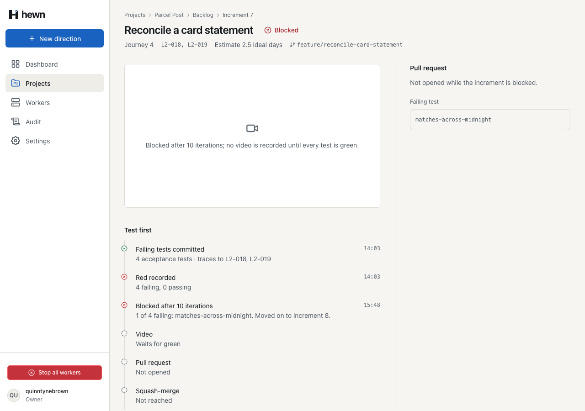

Each increment's captioned walkthrough, played on its page.




// docs/videos/{slug}/ holds {slug}.mp4 and {slug}.vtt.
var slug = folder.TrimEnd('/').Split('/')[^1];
var path = $"{folder.TrimEnd('/')}/{slug}.{(query.Captions ? "vtt" : "mp4")}";
var runs = await db.Runs.AsNoTracking()
.Where(r => r.DirectionId == direction.Id && r.Stage == Stages.Count - 1)
.Select(r => r.Id)
.ToListAsync(cancellationToken);
var commits = await db.GitHubMutations.AsNoTracking()
.Where(m => runs.Contains(m.RunId) && m.Kind == "commit")
.OrderByDescending(m => m.Id)
.Select(m => m.Result)
.ToListAsync(cancellationToken);
var sha = commits.Select(CommitRecord.Read).FirstOrDefault(c => c.Paths.Contains(path))?.Sha
?? throw new NotFoundException("no_video", "No commit recorded this increment's video.");
/// <summary>L2-023 AC2: the increment's recorded MP4, with byte ranges so the player can seek.</summary>
[HttpGet("{projectId:guid}/increments/{number:int}/video")]
public async Task<IActionResult> IncrementVideo(Guid projectId, int number, CancellationToken cancellationToken)
{
var video = await mediator.Send(new Hewn.Application.Increments.GetIncrementVideoQuery(projectId, number, Captions: false), cancellationToken);
Response.Headers.CacheControl = "private, max-age=300";
return File(video.Content, video.ContentType, enableRangeProcessing: true);
}
{
"number": 1,
"title": "Sign in",
"status": "Merged",
"video": "Recorded",
"videoNote": "docs/videos/sign-in/",
"videoAt": "2026-11-10T11:25:53.407239+00:00",
"videoUrl": "/api/projects/40656a57…/increments/1/video",
"captionsUrl": "/api/projects/40656a57…/increments/1/video/captions"
}
protected loaded(): void {
const video = this.media().nativeElement;
this.total.set(Number.isFinite(video.duration) ? video.duration : 0);
// Captions are drawn over the picture by the player, so the browser's own rendering stays hidden.
const track = video.textTracks[0];
if (track) {
track.mode = 'hidden';
track.oncuechange = () => this.showCue();
}
}
private showCue(): void {
const cues = this.media().nativeElement.textTracks[0]?.activeCues;
const texts: string[] = [];
for (let i = 0; cues && i < cues.length; i++) texts.push((cues[i] as VTTCue).text);
this.cue.set(texts.join('\n'));
}
protected seekKey(event: KeyboardEvent): void {
const steps: Record<string, number> = {
ArrowRight: 5,
ArrowUp: 5,
ArrowLeft: -5,
ArrowDown: -5,
};
if (event.key in steps) this.seekTo(this.current() + steps[event.key]!);
else if (event.key === 'Home') this.seekTo(0);
else if (event.key === 'End') this.seekTo(this.total());
else return;
event.preventDefault();
}
if (d.video === 'Recorded') return null;
if (d.video === 'Failed') {
return {
tone: 'failed',
title: `Video failed: ${d.videoNote ?? 'no reason given'}`,
text: 'The capture failed, was retried once and failed again. The pull request went ahead with this noted under Notes.',
};
}
if (d.status === 'Blocked') {
return {
tone: 'waiting',
text: `Blocked after ${d.iterations} iterations; no video is recorded until every test is green.`,
};
}
[Video](docs/videos/sign-in/sign-in.mp4) of the journey in the running app.
// Video (L2-023 AC1, AC3): tried at most twice, never blocking the increment.
const video = await this.video(leased, directory, slug, task('video'), signal);
if ('path' in video) {
// L2-023 AC2: a relative link in a PR body resolves under /pull/N, so link the file at the commit that holds it.
const sha = await commitChanges(key('video'), `Record the video for ${increment.title}`);
const repository = leased.project.repository;
if (sha && repository) video.url = `https://github.com/${repository}/blob/${sha}/${video.path}`;
} else {
[Video](https://github.com/hewn-builds/kiln-booking/blob/a81b7e1/docs/videos/sign-in/sign-in.mp4) of the journey in the running app.
public async Task The_video_answers_a_byte_range_so_the_player_can_seek()
{
var (owner, projectId) = await RecordedAsync();
using var request = new HttpRequestMessage(HttpMethod.Get, $"/api/projects/{projectId}/increments/1/video");
request.Headers.Range = new RangeHeaderValue(1000, 1099);
var response = await owner.SendAsync(request);
Assert.Equal(HttpStatusCode.PartialContent, response.StatusCode);
Assert.Equal(Mp4[1000..1100], await response.Content.ReadAsByteArrayAsync());
Assert.Equal(4096, response.Content.Headers.ContentRange!.Length);
}
await increment.open(projectId, 1);
await expect(increment.videoFooter).toContainText(/^Captioned walkthrough · 1080p · 0:0[1-9]/);
await expect(increment.videoFooter).toContainText(/docs\/videos\/[a-z0-9-]+\/$/);
await increment.play.click();
await expect(increment.caption).not.toBeEmpty();
await expect.poll(() => increment.currentTime()).toBeGreaterThan(0.5);
4 new: video, range, failed, Viewers
The PR links the video at its commit
4 behaviour, 1 live, 3 visual, 2 a11y





